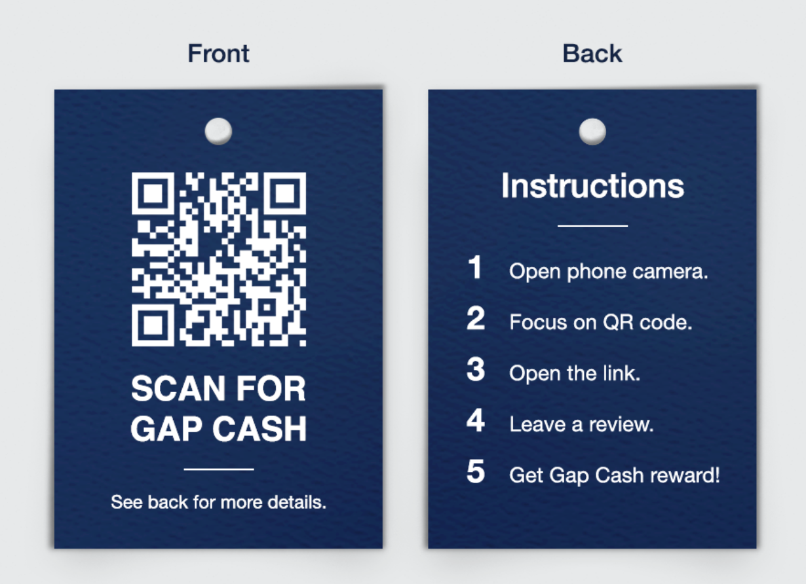
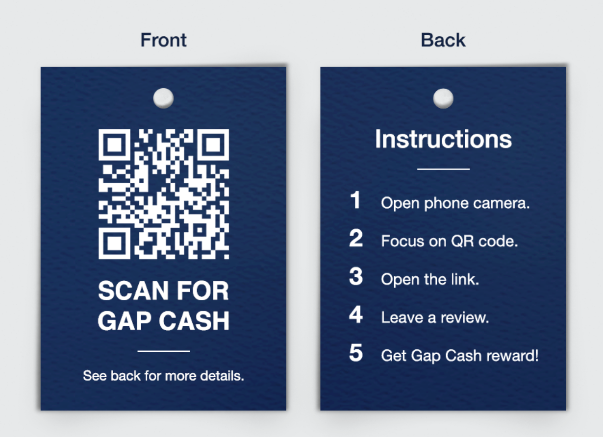
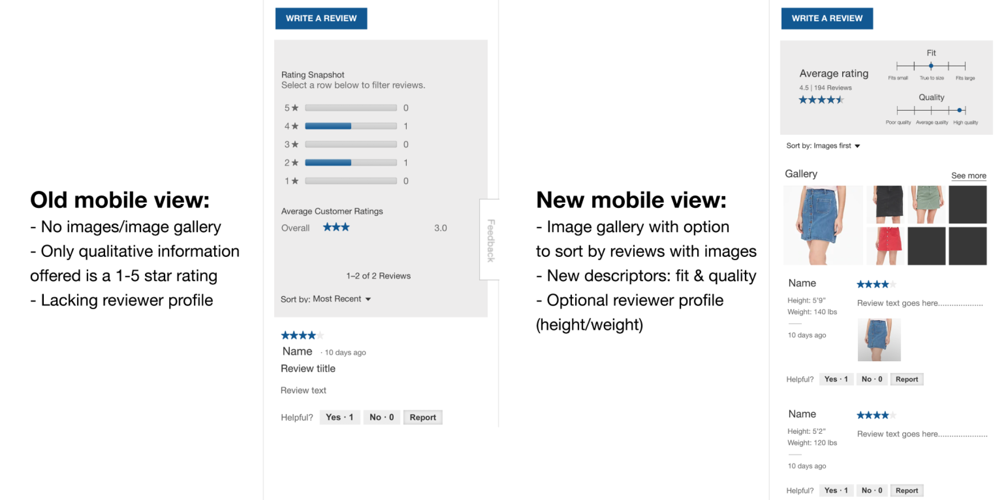

Gap Revival
Spring 2019 • CS 468 (Tech and Advertising Campaigns)
#School #Photoshop #Prototyping #User Research
Description
In this course, individual teams examined Gap's brand and came up with innovative methods to help broaden its target audience. Our team decided to design ID-associated QR codes leading to a review page that would be physically added onto product tags, thus making the offline-to-online transition smoother. We conducted competitor analysis to understand Gap's weak points, developed a strategy plan for offering GapCash to incentivize customers to write reviews, and also mocked up interface redesigns for the review page.
Responsibilities
▶ Led project conceptualization and mocked up tag design and UI changes
▶ Worked on competitor analysis and conducted preliminary research to better understand brand image and interface
— Watch Pitch Video
Gap color analysis
 

Mockups for QR code tag
Mockup for review page redesign